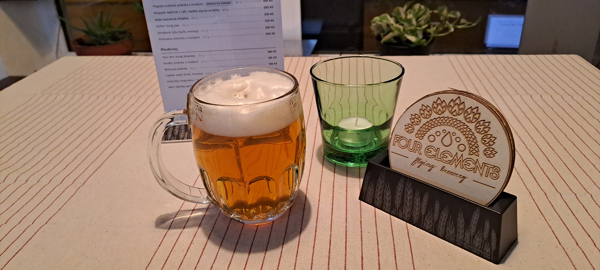

🍺 Na čepu
Točené pivo
🍺 NOVINKA NA ČEPU — Brunclíkova 10° — 62 Kč 🍺

Brunclíkova 10°
Four Elements Brewery · světlá výčepní · 4,0 %
Brzy na čepu
Co budeme mít taky brzy na čepu a za kolik. Ceny jsou za velké pivo, tedy 0,5 l.
Pilsner Urquell
Světlý ležák 12°
Velkopopovický Kozel
Ležák 11°
Gambrinus
Výčepní 11°
Birell
Nealkoholické, 0,0 %
Four Elements 10° Brunclíkova
- PivovarFour Elements Brewery
- Pivní stylVýčepní
- DruhSvětlé
- Obsah alkoholu4,0 %
Světlá výčepní 10° pojmenovaná po našem pradědovi Josefovi Brunclíkovi. Tři druhy sladů, dva různé chmele. Jemnost, plnost, pitelnost a příjemné chmelové doznívání. Tak se stavte na pár kousků. U jedné nezůstanete…
🍺 Speciál na čepu
STAR-LORD 13° — „Mezigalaktická“ IPA
- PivovarFour Elements Brewery
- Pivní stylIPA
- Stupňovitost13°
- ChmeleSimcoe a Galaxy
Pivo volně inspirované filmem Strážci Galaxie. Chmelené Simcoe pro zemský rozměr a Galaxy pro ten vesmírný. Středně plné tělo, světlá barva, střední hořkost, ovocná chuť a pořádná chmelová vůně. Tóny tropického ovoce, marakuji, broskve a borovice, grapefruitu a lesních bobulí vám dají nasát atmosféru intergalaktických cest za dobrodružstvím.
Nabídka se může měnit — co zrovna teče, poznáte na tabuli u výčepu. Ceny jsou včetně DPH.
← Zpět na akce a události